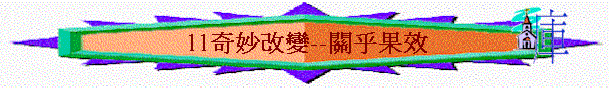

經文：羅5:1-5 約6:47
引言：你有沒有認識一些基督徒朋友? 他們給你什麼好印象? 你覺得若信了耶穌後，有甚麼的改變？
or
活動:事先請組員預備一些童年相片，彼此傳閱，看看和現在的組員有什麼分別
～聖經又提到信主後，人會有甚麼不同地方？ 會得到甚麼？
１．VI．一開始，題到信耶穌後，除了在身份上能稱義外，在關係上，有甚麼改變？ 有沒有試過同人有不和？ WHY？ 當時感受如何？ 我們若仍不信神，我們同神的關係又如何？
２．在身份上信主的人可稱義，在關係上他們與神相和好，在位置上，V2．休們有甚麼改變？ 如果信耶穌後，是現在站在這恩典中，未信時，人站在甚麼範圍中。試用一些字眼、詞句、形容？ 今日你感受到自己現在是在恩典中？ 有甚麼恩典？ 試分享？
３．另外，在心態上信主的人有甚麼不同？ 未信前，有沒有試過歡樂？ 基督徒的歡樂同世人的歡樂有甚麼不同之處？（V2-5)
４．V2．題到有甚麼值得信主的人歡喜？ 在地上，有沒有見過一些景物，情景人物，十分榮耀、美麗，令你難忘？ 如果要用地上一個情景稍為同【神的榮耀】相比，你會用甚麼情景？ 在人生上，有沒試過失意？ 但想起神的榮耀，信主的人可以有什麼改變？
５．約6:47又題到信主的人會得什麼? 什麼叫永生? 永生的相反是什麼? 基督徒憑什麼得到永生？
６．得了永生後，會否因為基督徙表現不好而收回呢？ 何以見得？ 可參考（來７：２５，提後２：１３）
７．願來信耶穌後，在身份上可得稱為義，在關係上與神復和，在位置上站在恩中，在心態上得著喜歡，在盼望上得到永生，在以上的改變中，你最想得那一方面改變？
８．又如何得到？ 你願意決定一生相信耶穌，跟隨耶穌基督，成為一個基督徒嗎？